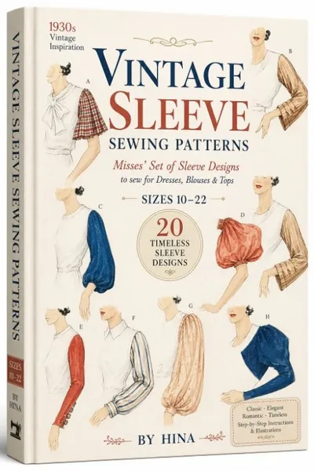
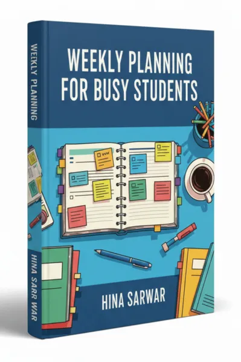

Serger| Vintage Sleeve Sewing Patterns
Product profile · Marketplace data 2026-10-14 · Sales-page research 2026-10-14 · Categories: Hobby & Craft, Fashion
- Serger| Vintage Sleeve Sewing Patterns is a downloads in Hobby & Craft and Fashion sold through the Digistore24 marketplace by vendor Book2Book, listed since 2026-08-27.
- List price $17.99 (single payment) — checkout, delivery and refunds are handled by Digistore24 itself, not the vendor.
- Buyer protection: the sales page advertises a money-back guarantee — confirm the exact window at checkout.
Interested in Serger| Vintage Sleeve Sewing Patterns? The current price, bonuses and guarantee terms live on the vendor's official page:
Check the official sales page
Affiliate link — we may earn a commission at no extra cost to you.

Marketplace record
| Product type | Downloads |
|---|---|
| Price | $17.99 (Single payment) |
| Refund window | Per the vendor's sales page — check the official page before buying |
| Vendor | Book2Book (listed since 2026-08-27) |
Vendor's marketplace description
Earn 70% Commissions on a High-Converting Sewing or Serger Machine/ Overlocker Machine Product Title: Vintage Sleeve Sewing Patterns Niche: Sewing & Fashion Product Price: $17.99 USD Your Commission: 70% on every single sale Why Promote This Product? The vintage fashion, slow living, and DIY sewing community is experiencing a massive surge in popularity. Millions of makers, historical costumers, thrifters, and creative fashionistas are eager to add timeless elegance, unique structural details, and classic historical flair to their handmade wardrobes. This ultimate sleeve pattern collection delivers a complete, plug-and-play manual featuring graded pattern pieces, step-by-step assembly instructions, style variations, and professional tailoring tips designed to turn absolute beginners and intermediate sewists into confident garment makers. • Massive 70% Payout: Priced at an irresistible impulse-buy point of $17.99 for a comprehensive pattern library, this offer boasts high conversion rates and maximum profit per click. • High-Demand, Universal Appeal: Perfect for garment sewists, cosplay creators, slow-fashion advocates, vintage enthusiasts, and crafters looking to upgrade basic dress patterns across all skill levels. • Plug-and-Play Value: Packed with clear digital prints, easy-to-follow layout diagrams, and immediate multi-format downloads, giving buyers instant sewing inspiration and keeping refund rates near zero. • Ideal for Content Creators: A dream offer for sewing YouTubers, Instagram reel makers, TikTok creators, fashion bloggers, and DIY podcasters looking to monetize creative, crafty, and slow-fashion audiences. Target Audience • Garment Sewists & Makers: Dressmakers, quilters, and fashion hobbyists who want to elevate simple bodices and basic tops with stunning historical and vintage sleeve styles. • Slow Fashion & Thrifting Enthusiasts: Individuals passionate about sustainable style, upcycling thrifted garments, and creating custom, long-lasting handmade wardrobes. • Cosplayers & Historical Costumers: People looking to build accurate, detailed costume components with reliable, expert-backed vintage tailoring structures. • DIY Bloggers & Creative Beginners: Crafters seeking accessible, highly visual project guides to expand their sewing repertoire beyond basic garments. Marketing Angles to Use • The "Elevate Basic Sewing" Angle: "Stop settling for plain, repetitive sleeves on your handmade garments. Discover how to instantly transform simple dresses and blouses with stunning, timeless vintage sleeve silhouettes." • The Slow Fashion & Upcycling Angle: "Breathe new life into thrifted garments and simple sewing patterns. Turn an ordinary outfit into a custom statement piece with classic historical detailing for just $17.99!" • The "Creative Confidence" Angle: "Worried complex vintage construction is too difficult? Unlock the ultimate foolproof sleeve design guide featuring clear grading, step diagrams, and foolproof instructions so you can sew with total confidence." How to Get Started • Set up your affiliate account. • Grab your unique promo link. • Start driving targeted traffic using your email list, sewing blog, or social channels (Instagram Reels, TikTok sewing shorts, YouTube tutorials, and craft newsletters perform exceptionally well for DIY and fashion patterns!). Sewing Machine, Sewing Patterns Serger Overlocker Overlocker machine Serger machine Ready to cash in on the booming sewing and handmade fashion market? Grab your affiliate link today and start collecting those 70% commissions!
From the vendor's sales page
Page title: Vintage Sleeve Sewing Patterns - Digistore24
Section headlines
- Vintage Sleeve Sewing Patterns
- (Printable PDF)
- Transform a Simple Garment Into 20 Different Looks—One Sleeve at a Time
- Inside This Pattern Collection, You'll Discover
- See What You're Creating Before You Sew
- Made for Dresses, Blouses & Tops
- Clear, Easy-to-Follow Instructions
- PLUS: Learn How to Customize Your Sleeves
- SIZES 10–22
- Imagine the Possibilities...
Opening copy
You don't always need a completely new dress pattern to create something beautiful.
A soft bishop sleeve can turn a simple blouse into something romantic. A dramatic leg-of-mutton sleeve can create a bold vintage silhouette. A puff, bell, flutter, or poet sleeve can give the same basic garment an entirely new personality.
Vintage Sleeve Sewing Patterns gives you a collection of 20 beautiful sleeve designs to help you create, sew, and customize dresses, blouses, and tops you will love to wear.
Prices mentioned on the page: $10 · $17.99
Guarantee language found: “60” — always confirm the current terms on the official page before relying on it.
Research method: raw HTML fetch · 2635 words on page · quality: rich · researched 2026-10-14. Full research file (MD) ↗
How products like this are delivered
General note about this product type (not vendor-specific instructions): Download products are delivered digitally: immediately after checkout you receive download links (or member-area access) — no physical shipping. For the exact usage of Serger| Vintage Sleeve Sewing Patterns, the official sales page and included materials are the authoritative source.
What is Serger| Vintage Sleeve Sewing Patterns?
Serger| Vintage Sleeve Sewing Patterns is a downloads in the Hobby & Craft category of the Digistore24 marketplace, published by vendor Book2Book and on sale since 2026-08-27. The vendor describes it as follows: "Earn 70% Commissions on a High-Converting Sewing or Serger Machine/ Overlocker Machine Product Title: Vintage Sleeve Sewing Patterns Niche: Sewing & Fashion Product Price: $17.99 USD Your Commission: 70% on every single sale Why Promote This Product? The vinta" (vendor's marketplace description, lightly truncated).
Serger| Vintage Sleeve Sewing Patterns pricing: what you will pay
The marketplace lists Serger| Vintage Sleeve Sewing Patterns at $17.99 (single payment). Digistore24 adds any tax your country requires at checkout, where you see the final amount before paying. The sales page itself mentions: $10, $17.99 (vendor claims — the checkout total is the binding one). There is no separate marketplace-side fee; vendors may offer their own upsells after checkout.
Serger| Vintage Sleeve Sewing Patterns refund policy and money-back guarantee
The sales page advertises: "60" (vendor claim). Refunds for Digistore24 purchases are processed through the platform: request via the support link in your order email, within the vendor's guarantee window shown at checkout. Practical advice: decide inside the window — if the product underdelivers, refund it rather than letting it ride.
Details and mechanics: how Digistore24 refunds work.
Who is Serger| Vintage Sleeve Sewing Patterns for?
Based on its Hobby & Craft classification and single payment pricing, Serger| Vintage Sleeve Sewing Patterns targets buyers looking for hobby & craft solutions at an entry-level price. The honest test is not the category but your own situation: will you realistically use it within the refund window? If yes, the price is an investment; if not, it is clutter — regardless of quality.
Is Serger| Vintage Sleeve Sewing Patterns legit? What to verify before buying
We do not rate legitimacy — nobody can, without using the product. What you can verify, all on this page: the vendor's marketplace history (listed since 2026-08-27), the verbatim sales-page extracts below (labeled vendor claims — their marketing, not our endorsement), the guarantee terms at checkout, and the delivery method. Red flags to check on any offer: pressure countdowns paired with vague refund terms, testimonials without dates, and vendor sites that hide pricing until checkout.
How do you access Serger| Vintage Sleeve Sewing Patterns after buying?
Checkout runs on Digistore24. After payment: Download products are delivered digitally: immediately after checkout you receive download links (or member-area access) — no physical shipping. Keep your order email — it is your key to the downloads, your refund requests and Digistore24 buyer support.
Serger| Vintage Sleeve Sewing Patterns reviews: how to research it properly
Third-party "reviews" of marketplace products are mostly affiliate content — including pages like this one, which earns a commission on purchases. Treat every review (ours included) as a starting point, then verify against primary sources: the vendor's own sales page, the Digistore24 refund policy, and — for hobby & craft — independent communities outside the affiliate ecosystem. On this page the sales-page extracts below are quoted verbatim, so you can judge the vendor's claims without clicking away.
How to buy Serger| Vintage Sleeve Sewing Patterns safely
- Open the official sales page and read the full offer.
- Confirm the final price and the refund window on the Digistore24 checkout page — that page is binding, not any review.
- Pay inside the Digistore24 checkout (never by bank transfer or off-platform links).
- Save the order confirmation email; note the refund deadline in your calendar.
- Evaluate promptly. Digistore24 buyer support can help if the vendor is unresponsive.
Full research archive for this product (Markdown: complete marketplace record + verbatim sales-page extracts): Serger| Vintage Sleeve Sewing Patterns — data archive (.md).
- Listed price & billing — source: official Digistore24 marketplace API, snapshot 2026-10-14. The checkout page is always the binding source for the current price.
- Sales-page quotes & headline — source: https://www.checkout-ds24.com/product/726662, fetched 2026-10-14 (method: raw HTML). Verify: open the official page.
- Guarantee / refund — set by the vendor; confirm on the sales page at purchase time.
- Not verified by us: product quality, outcomes, testimonials — no hands-on test has been performed for this listing.
Frequently asked questions about Serger| Vintage Sleeve Sewing Patterns
Answers compiled from the marketplace snapshot (2026-10-14) and vendor sales-page research (2026-10-14); vendor claims are labeled inline.
What is Serger| Vintage Sleeve Sewing Patterns?
Serger| Vintage Sleeve Sewing Patterns is a downloads sold through the Digistore24 marketplace by vendor Book2Book, listed since 2026-08-27. It is filed under Hobby & Craft and Fashion. Digistore24 handles checkout, delivery and refunds for this product.
How much does Serger| Vintage Sleeve Sewing Patterns cost?
The Digistore24 marketplace lists it at $17.99 (single payment). Prices are set by the vendor and can change — the marketplace record above shows the snapshot; the official sales page shows the current price.
Is there a money-back guarantee for Serger| Vintage Sleeve Sewing Patterns?
The vendor's sales page advertises: “60”. The guarantee window is set by the vendor — confirm the current terms on the official page before buying. Digistore24 handles the refund process.
Is Serger| Vintage Sleeve Sewing Patterns legit?
We don't rate legitimacy — we publish verifiable data instead: vendor Book2Book (listed on Digistore24 since 2026-08-27), listed on the marketplace since 2026-08-27, with its complete sales-page research archived on this page (vendor claims labeled as such). Read our 6-point evaluation method and judge with the facts — or join the discussion about Serger| Vintage Sleeve Sewing Patterns.
Where can I buy Serger| Vintage Sleeve Sewing Patterns safely?
Only through the official sales page linked on this site (checkout and refunds run via Digistore24). Verify the price and guarantee there before ordering. That link is an affiliate link — buying through it supports this site at no extra cost to you.
How do I get Serger| Vintage Sleeve Sewing Patterns after paying?
Checkout runs on Digistore24: after payment you receive your access or download by email and in your Digistore24 customer account. Delivery details for this product type: Download products are delivered digitally: immediately after checkout you receive download links (or member-area access) — no physical shipping. If anything fails, Digistore24 buyer support can recover your order.
All 50 buyer questions about Hobby & Craft — the full category FAQ.
Discuss Serger| Vintage Sleeve Sewing Patterns on Reddit
Community threads are where real buyers compare notes. We link to communities, not to specific posts — threads move, subreddits stay:
- r/DIY — community discussions that often touch hobby & craft.
- Search Reddit for "Serger| Vintage Sleeve Sewing Patterns" — real-time results, we don't control them.
- Top "review" mentions this year — sort by top, filter by recency yourself.
Related shopping on Amazon
Physical products and gear commonly bought alongside Serger| Vintage Sleeve Sewing Patterns:
- Shop skincare on Amazon — top results, Amazon's ranking.
- Bestsellers in skincare — live Amazon list, we don't curate it.
Sponsored: as an Amazon Associate, DigistorePicks earns from qualifying purchases (tag adminstore05-20). Amazon sets its own prices and commissions (typically low single digits — far below Digistore24 vendors' 30–75%). We list Amazon as a convenience for physical goods; it is not an alternative to the digital product above.
Related offers in Hobby & Craft
Unlock the rewarding DIY and crafts niche with an offer that turns a common dream into an achievable reality. The Beginner's Guide to Woodworking with Hand
Architecture VIZ Graphics – MEGA BUNDLE with 17+ GB and 26 Collections for $395 Professional graphic collections for architectural visualizations by Tonytexture
101 Easy Scroll Saw Patterns is a great bundle of original, unique hand drawn scroll saw patterns for experienced woodworkers and people just starting out using

Top seller in CB for more than a decade! Now Comes to Digistore24 . This WoodWorking Offer has made more millionaires than any other woodworking offer on the in
Other offers by Book2Book
Full catalog: Book2Book vendor hub — all listings with marketplace data.

Earn 70% Commissions on a High-Converting Foraging and Wild Food Offer Product Title: U.K Foraging For Beginners Niche: Nature & Outdoors / Sustainable Livi

Earn 60% Commissions on a High-Demand Personal Finance & Productivity Offer Product Title: Monthly Budget Planner (Google Sheets) Niche: Personal Finance /

Earn 50% Commissions on a High-Demand Gardening Planner and Logbook Product Title: Garden Planner and Logbook (Printable PDFs) Niche: Gardening / Homesteading /

Earn 70% Commissions on a High-Converting Relationship Offer! Product Title: Chasing Men is a Big Mistake: 23 Dating Secrets to Get a High-Quality Man and Keep
Same vendor on our German site
- Overlock-Grundlagen für Anfänger — $20.13 (Hobby & Craft)
- Gitarre lernen ohne Frust — $20.13 (Dancing & Music)
- 30 einfache Seifenrezepte zum Selbermachen — $20.13 (Hobby & Craft)
Same vendor, German-language marketplace listings.
Serger| Vintage Sleeve Sewing Patterns is also listed in
Fashion (9 products)
Similar price range in Hobby & Craft

Affiliate Commission: 80% Product : Ebook Price: $17.99 Target Countries: USA, UK, Canada, Australia, New Zealand
Affiliate Commission: 80% Product : Ebook Price: $17.99 Target Countries: USA, UK, Canada, Australia, New Zealand
Affiliate Commission: 80% Product : Ebook Price: $17.99 Target Countries: USA, UK, Canada, Australia, New Zealand

Earn 70% Commissions on a High-Converting Serger & Overlocker Troubleshooting Guide! Product Title: Serger and Overlocker Troubleshooting Guide Niche: Craft
Related searches
Where to check it out
Read the vendor's full sales page (current price, guarantee terms and bonuses are listed there):
View official sales page
That link is an affiliate link — if you buy through it we earn a commission from the vendor at no extra cost to you.
Sources & further information
- Official sales page (current price, guarantee, bonuses): www.checkout-ds24.com/product/726662 (affiliate link)
- Public Digistore24 product page: checkout-ds24.com/product/726662
- Full research file (Markdown, versioned): content/products/58699-serger-vintage-sleeve-sewing-patterns.md
- Vendor's affiliate support page: book2bookaffiliatesupport.blogspot.com/2026/08/vintage-sleev
- Marketplace category: Hobby & Craft
How we evaluate products like Serger| Vintage Sleeve Sewing Patterns
Six checks, all on official marketplace numbers — earnings/sale ÷ cancel-rate skepticism × funnel fit. Read the full evaluation method · our research standards & labeling.
Questions, or own experience with Serger| Vintage Sleeve Sewing Patterns?
We publish hands-on reviews only after buying a product ourselves — but your experience helps other readers: start or join the discussion about Serger| Vintage Sleeve Sewing Patterns on GitHub. Found a wrong number? Report a correction — every page shows its data dates, and corrections are applied to the whole site.